Choosing which branch runs
Gregory S. DeLozier, PhD
if and else become keywords.
{ and } are now reserved for blocks.
if (temperature > 90) {
print("Too hot");
} else {
print("Fine");
}The condition must be a boolean.


Exactly one branch runs, either way.
if (false) {
stuck = exit(9) + number(input());
} else {
print("only this branch runs");
}Not skipped output. Skipped evaluation.
if_statement ::= "if" "(" expression ")" block [ "else" block ]
block ::= "{" [ statement_list ] { ";" } "}"A bare statement is never a valid branch.
if (a) if (b) x=1; else y=2;Which if does the else belong to?
if (grade >= 90) {
letter = "A";
} else {
if (grade >= 80) {
letter = "B";
} else {
letter = "C or lower";
};
};def parse_block(tokens):
tokens = require(tokens, "{", "Expected '{' to start a block")
while tokens[0]["tag"] == ";":
tokens = tokens[1:]
if tokens[0]["tag"] == "}":
return {"tag": "statement_list", "statements": []}, tokens[1:]
statements, tokens = parse_statement_list(tokens)
tokens = require(tokens, "}", "Expected '}' to close a block")
return statements, tokensif (found) { }{}, { ; }, and { ;;; }
are empty blocks.
A trailing semicolon before } is now allowed
too.
if (true) { x=1 };
y=2;A semicolon after }, none before
else.
def parse_if_statement(tokens):
tokens = require(tokens, "if", "Expected 'if'")
tokens = require(tokens, "(", "Expected '(' after 'if'")
condition, tokens = parse_expression(tokens)
tokens = require(tokens, ")", "Expected ')' after if condition")
then_block, tokens = parse_block(tokens)
else_block = None
if tokens[0]["tag"] == "else":
else_block, tokens = parse_block(tokens[1:])
return {"tag": "if", "condition": condition, "then": then_block,
"else": else_block}, tokensif ast["tag"] == "if":
condition, status = evaluate(ast["condition"], environment)
if status is not None:
return condition, status
if type(condition) is not bool:
raise TypeError("if condition must be a boolean expression")
if condition:
return evaluate(ast["then"], environment)
if ast["else"] is not None:
return evaluate(ast["else"], environment)
return None, None
x = 1;
if (true) {
if (true) {
exit(7);
};
};
x = 2;Result: (7, "exit"). x stays
1.
Single- and two-branch conditionals, nested conditionals, multi-statement blocks.
Unselected branch never touches input, exit, or assert.
Status escapes nested blocks and stops later statements.
Parser rejects unbraced bodies; accepts braced single-statement and nested blocks.
Why must the unselected branch be skipped entirely, not evaluated and discarded?
What would break if if consumed a status from its own
selected branch?
What would adding an “else if” shortcut change about how
else attaches?
If blocks later introduced their own scope, what would have to change here?